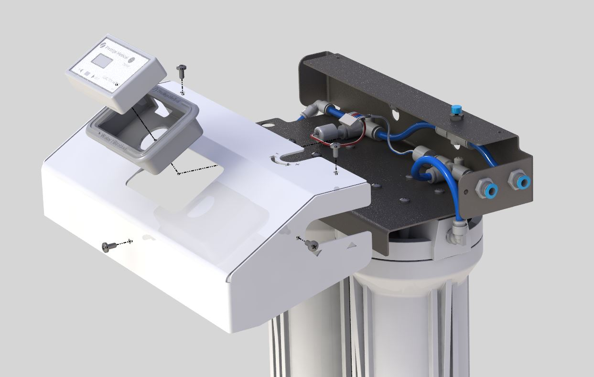
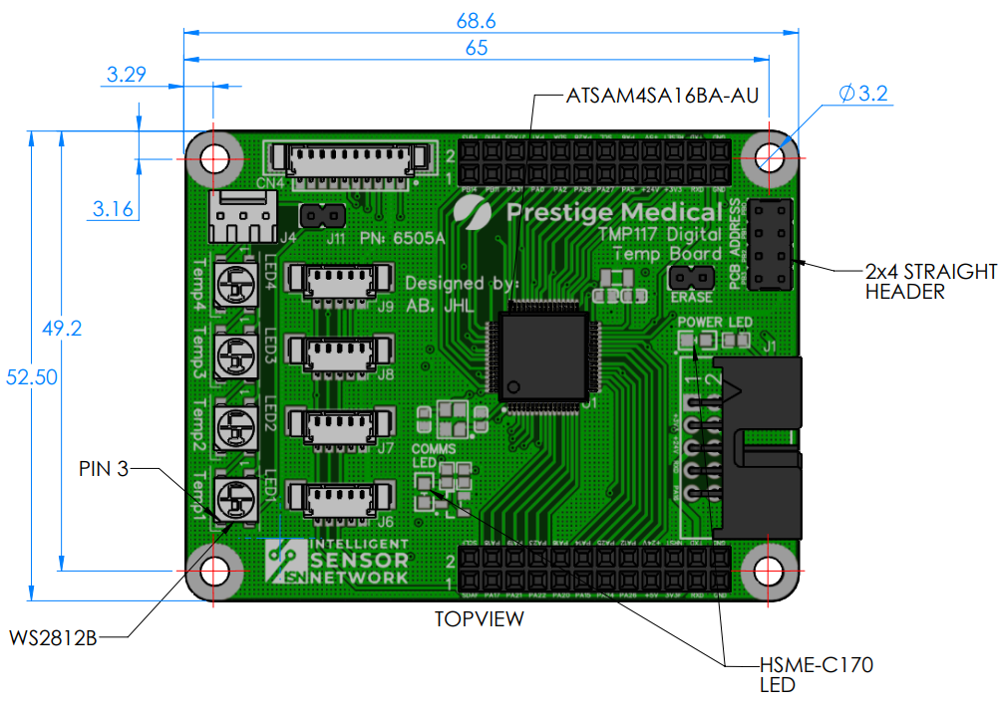

Projects
Aqua Pro - Water Filtration Unit
Design and Development Lead
Designed and developed an autoclave inlet water filtration unit based on dionisation principles. This electro-mechanical product is comprised of laser cut sheet metal parts, silicon injection moulded parts and controlled using TDS sensors
Learn MoreMy first mechanical design project after joining Prestige Medical was to look at a water filtration unit that could be free standing but also fitted to the side of an autoclave. The main requirement of the device was to filter a direct feed of mains water to below 20ppm to ensure the autoclave boiler was protected from bacteria and limescale and prolong the life of the unit.
A render of the Aqua Pro Housing Pre-assembly
An objective of the project was to be cost effective. After research into existing products it was decided the unit would be a 2 filter ion exchange system designed for single autoclaves running 3-5 cycles per day. Conveniently attached either directly to the autoclave, to the wall or as a free standing device, the Aqua Pro can be configured, together with the Advance Pro automatic drain option, to provide a fully automatic water fill and drain system.
The main support bracket is made from folded steel sheets, this ensures the unit is strong and sturdy and also cost effective based on the sales forecast. Silicon based injection moulded parts were incorperated into the design to add some quality textures and shapes, they are also used to fix the control box into the steel housing. The Aqua Pro concepts were modelled using SOLIDWORKS. The concept, BOM costs and timescales were presented to the sales team and stakeholders for design review. After several iterations prototypes were built and tested to ensure the design was within specification.
Once the design was finalised, the product was tested on the production line using a line trial based on work instruction sheets i created to ensure the unit was produce correctly and efficiently. During the line trial review feedback is taken from the production technicians and raised during FMEA meetings to ensure quality risks are within regulations and are of high standards.
Feedback from export distributers highlighted an issue with standard fittings. Since each country may use a different standard of plumbing fittings we required a special fitting that can be used in any situation. I design this turned part to fit to a self cutting isolation valve. It allows the engineer or plumber to adapt the mains water line to suit the standard 1/4" water filter tube.

A render of the self cutting isolation valve
Once the product went into production i was in charge of training the sales staff, service engineers and any distribution technicians on installing and using the device correctly. I also wrote all the technical documentaion and instruction manuals for the device. After this project i was able to become a team leader of future projects.

Intelligent Sensor Network (ISN)
Project Lead
A local sensor network, where all sensors are connected via a single high-speed communication harness. To achieve this, each sensor is adapted so it gains a level of 'intelligence'. Each sensor then becomes responsible to acquisition data remotely, convert it into digital data then transmit it back to the main PCB via a shared communication bus (a single harness).
Learn MoreBy the addition of a microcontroller to each sensor, the device can be transformed from a 'passive device' to an 'active device'. Active devices have useful benefits:
Pro's
• The additional microcontroller provides the 'intelligence' at each sensor
• The high-speed network is based on a multi-drop RS232 protocol
• Sensors daisy-chained together on the network communication harness
• Reduces sensor connector count on main PCB
• Reduces harness congestion around the main PCB
• Each sensor is programmed with a unique address identifiable on the local communication network
• Up to 127 sensors uniquely identifiable per network
• The main PCB identifies new sensors added to the network by a 'pairing' operation
• Calibration offset can be stored locally at each sensor
• Sensors are pre-calibrated at production stage before installationV1.2 ASB 22.09.20
• Sensors can be field-swapped 'calibrated-ready', simplifying maintenance
• Sensor swaps do not require harness removal
• Each sensor has built-in diagnostics capabilities
• A single RGB LED indicator per sensor can be used for quick diagnostic visualisation
• Opportunity for development of new intelligent sensor types.
• The main PCB I/O board becomes simplified, less cluttered.
• Potentially, all sensors are decentralised onto the network and the I/O PCB is removed
• CPU PCB manages network (and theoretically not need to be ever re-spun on new designs)
Con's
• Each sensor requires a small PCB (2-layer) with additional components (increased cost).
• The network harness is longer, has multiple connectors thus more costly than a smaller single harness
• Network harness may need better screening for EMC purposes
• If network harness is damaged to may need to be completely replaced

Layout of the proposed 'Intelligent Sensor Network'
Future Development of Intelligent Sensors
The above concept provides opportunity to develop new sensor types, without the need to re-spin main PCB hardware. New sensors are added transparently to the sensor network. Examples of what the sensor range will extend to:
• Pressure Sensor
• Humidity Sensor
• Water Detector Sensor
• Water Quality Sensor
• Flow Meter Sensor
• Extended Digital Inputs/Outputs

Images of the ISN Digital Temperature PCB. Leftmost is a mechanical drawing of the PCB, middle shows the populated samples using a reflow oven, and rightmost is the built up prototype.

Autoclave Vessel Cooling System
MSc Mechanical Engineering Dissertation
The thesis describes a comparison between a numerical model, for evaluating the heat transfer of medical autoclaves, and a working prototype. The aim of the cooling system is to reduce overall sterilization time and increase efficiency.
Learn MoreThe development of numerical simulation has been continuous over the years. Simulations can now be completed at a fraction the cost of physical testing, while gathering accurate results from repeatable evaluations. To this end, the paper investigates how numerical testing can be used to improve the performance of Medical Autoclaves. The numerical simulation completed in this thesis replicates the heating and cooling phases of a 134° Non-Vacuum autoclave cycle.
The cooling system is designed using integrative design techniques as covered in the literature review and a test prototype is built. A detailed description of the selection of components and materials is outlined in the methods. The novel aspects of the PID temperature controlled cooling system are described.
MSc Mechanical Engineering - Viva Slides

{kind=link}
{kind=link}
{kind=link}
{kind=link}
{kind=link}
{kind=link}
{kind=link}
MSc Thesis - An Investigation Into The Design & Development Of A Medical Autoclave Vessel Cooling System
Flutter Based Mobile App
Design and Development Lead
A mobile application built using flutter development framework and dart programming language. The aim of the application was to allow the users register their products and monitor them remotely using bluetooth or wifi serial with the devices.
Learn MoreI've always had a passion for programming and always wanted to develop an app. Since there are no mechanical parts the start up costs are low and the turnaround from concept is relatively quick. I have been definately sparked my love for programming during this project.
With the aid of the flutter framework, Android SDK and VS code it is easy to prototype an app and test different layouts using the hot reload feature. Meaning you can check the results of changes instantly without having to recompile everytime. This definately increases productivity and reduces development time.
The challange of this product was getting the app to communicate with the development boards or products. There have been some very useful open-source bluetooth and wifi packages available that have made this project possible.
There is alot of scope for this project going foward as i predict the users will want to monitor their devices using their mobile phones rather then old fashioned data loggers and sd cards. Combined with the intelligent sensor network the system could be very powerful for collecting data and producing key analytics for product development.


{kind=link}
Images of the connect app. Leftmost is bluetooth page for finding devices, middle shows the sidebar for the users quick access menu, and rightmost shows all the currently connected devices in a list.